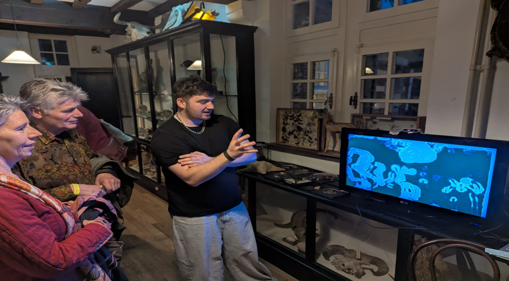
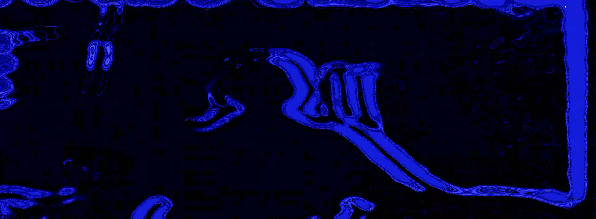
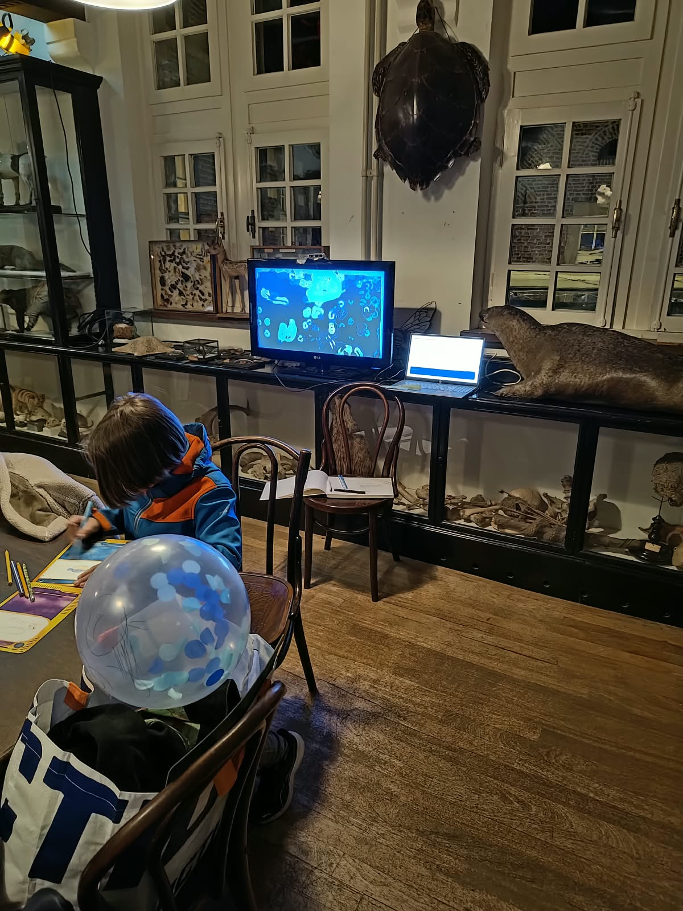

massimiliano

Fase A is the first development phase of The Memory of the Mirror, an interactive media art installation made within the CMD programme. Visitors see their own shadow with a delay, as if their movements travel through time. This phase was about experimenting with visual input and finding out how people react to an artwork that responds to their movement and presence.
I tested the first version live during Museumnight at the Natural History Museum of Maastricht, to see whether the project was on track or needed fine-tuning. The test validated the concept, gave valuable insight into real visitor behaviour, and introduced me to rapid prototyping in a live art context and to collaborative exhibition preparation.
It started with a walk under a tree. My shadow seemed to follow me with a slight delay, like an echo of light and dark. A far stronger form of this exists as illusory palinopsia, a neurological effect in which people keep seeing images from the past, as if time builds up in the eye.
Space and time have fascinated me since I was young, thanks to my father, who took me into the world of stars and the universe. That interest already returned in Gen ART, where I worked with space and wormholes.
Many people feel that time passes faster now than it used to. My grandmother said it simply: time goes faster now than it used to. Whether that comes from technology, spacetime or something else, nobody knows, but the feeling is real. The installation gives visitors a small reset: a moment to realise that we live in the now and should not linger too long in the past.
Inspiration came from Portals and from the AAO review of illusory palinopsia.


The plan was a Kinect 360 with Python and Processing, but I ran into hard limits. The Kinect v1 would not work on my laptop and Processing was not powerful enough for the visuals I had in mind. I switched to an Intel RealSense D435 camera and TouchDesigner, but the depth image still had too much noise and too little accuracy.
At the live test, the delayed shadow came across as a vague, unrecognisable blob. Children understood it right away and played with their delayed shadows, while most adults exchanged confused looks. Too much ambient light cancelled the effect, and visitors had little context for what to expect.
